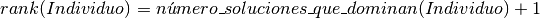
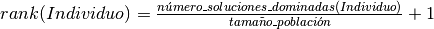

Community (clase)¶
-
class
Community(vector_functions, vector_variables, available_expressions, number_of_decimals, representation_instance, representation_parameters, fitness_instance, fitness_parameters, sharing_function_instance, sharing_function_parameters, selection_instance, selection_parameters, crossover_instance, crossover_parameters, mutation_instance, mutation_parameters)¶ - Proporciona toda la infraestructura lógica para poder construir poblaciones y operar con éstas, además de transacciones relacionadas con sus elementos de manera individual.Se le llama Community porque aludiendo a su significado una Community (ó Comunidad) consta de al menos una Population (o Población). De esta manera se deduce que en algún momento habrán métodos que involucren a más de una población.
Parameters: - vector_functions (List) – Lista que contiene las funciones objetivo previamente saneadas por Controller/Controller.py.
- vector_variables (List) – Lista que contiene las variables de decisión previamente saneadas por Controller/Controller.py.
- available_expressions (Dictionary) – Diccionario que contiene algunas funciones escritas como azúcar sintáctica para que puedan ser utilizadas más fácilmente por el usuario y evaluadas más ŕapidamente en el programa (véase Controller/XML/PythonExpressions.xml).
- number_of_decimals (Integer) – El número de decimales que tendrán las soluciones; con este número se determina en gran medida el tamaño del cromosoma.
- representation_instance (Instance) – Instancia de la técnica de representación que eligió el usuario (véase Controller/Verifier.py).
- representation_parameters (Dictionary) – Diccionario que contiene todos los parámetros adicionales a la técnica de representación considerada por el usuario.
- fitness_instance (Instance) – Instancia de la técnica de Fitness que eligió el usuario (véase Controller/Verifier.py).
- fitness_parameters (Dictionary) – Diccionario que contiene todos los parámetros adicionales a la técnica de Fitness seleccionada por el usuario.
- sharing_function_instance (Instance) – Instancia de la técnica de Sharing Function seleccionada por el usuario (véase Controller/Verifier.py).
- sharing_function_parameters (Dictionary) – Diccionario que contiene todos los parámetros adicionales a la técnica de Fitness seleccionada por el usuario.
- selection_instance (Instance) – Instancia de la técnica de selección (Selection) elegida por el usuario (véase Controller/Verifier.py).
- selection_parameters (Dictionary) – Diccionario que contiene todos los parámetros adicionales a la técnica de selección (Selection) usada por el usuario.
- crossover_instance (Instance) – Instancia de la técnica de cruza (Crossover) tomada por el usuario (véase Controller/Verifier.py).
- crossover_parameters (Dictionary) – Diccionario que contiene todos los parámetros adicionales a la técnica de cruza (Crossover) manejada por el usuario.
- mutation_instance (Instance) – Instancia de la técnica de mutación (Mutation) tomada por el usuario (véase Controller/Verifier.py).
- mutation_parameters (Dictionary) – Diccionario que contiene todos los parámetros adicionales a la técnica de mutación (Mutation) seleccionada por el usuario.
Returns: Model.Community.Community
Return type: Instance
-
_Community__compare_dominance(current, challenger, allowed_functions)¶ Note
Este método es privado.
Permite realizar la comparación de las funciones objetivo de los individuos current y challenger tomadas una a una para indicar así quién es el dominado y quién es el que domina. Cabe mencionar que más apropiadamente se le conoce como dominancia fuerte de Pareto.
Parameters: - current (Instance) – El Individuo inicial para comprobar dominancia.
- challenger (Instance) – El Individuo que reta al inicial para comprobar dominancia.
- allowed_functions (List) – Lista que indica cuáles son las funciones objetivo que deben compararse.
Returns: True si current domina a challenger, False en otro caso.
Return type: Boolean
-
_Community__get_best_individual_results(population)¶ Note
Este método es privado.
Obtiene los valores de las variables de decisión y de las funciones objetivo por cada individuo.
Parameters: population (List) – Una lista que contiene los mejores individuos por generación. Returns: Una lista que contiene por un lado la tupla (generacion, funciones) y por otro la tupla (generación, variables). Esto por cada generación. Return type: List
-
_Community__get_pareto_results(population)¶ Note
Este método es privado.
Obtiene el frente de Pareto, el complemento del frente de Pareto y el óptimo de Pareto.Para una mejor orientación léase la parte escrita del proyecto.Parameters: population (Instance) – La población sobre la cual se obtendrán estos elementos. Returns: Una lista que contiene el frente de Pareto, su complemento y el óptimo de Pareto. Return type: List
-
_Community__using_sharing_function(individual_i, individual_j, alpha_share, sigma_share)¶ Note
Este método es privado.
Devuelve un valor que ayuda al cálculo del Sharing Function.A grandes rasgos el sharing function sirve para hacer una selección más precisa de los mejores Individuos cuando se da el caso de que tienen el mismo número de Individuos dominados.Parameters: - individual_i (Instance) – Individuo sobre el que se hará la operación.
- individual_j (Instance) – Individuo sobre el que se hará la operación.
- alpha_share (Float) – El valor necesario para poder calcular la distancia entre Individuos.
- sigma_share (Float) – El valor necesario para poder calcular la distancia entre Individuos.
Returns: El resultado que contribuirá al sharing function.
Return type: Float
-
assign_fonseca_and_flemming_pareto_rank(population, allowed_functions='All')¶ - Asigna una puntuación (ó rank) a cada uno de los Individuos de una Población con base en su dominancia de Pareto.A grandes rasgos, el algoritmo asigna un rank que consiste en:

Esta técnica es usada principalmente por M.O.G.A.Parameters: - population (Instance) – La Población sobre la que se hará la operación.
- allowed_functions (List) – Lista que contiene las posiciones de las funciones que son admisibles para hacer comparaciones. Por defecto tiene el valor “All”.
-
assign_goldberg_pareto_rank(population, additional_info=False, allowed_functions='All')¶ - Asigna una puntuación (ó rank) a cada uno de los Individuos de una Población con base en su dominancia de Pareto.En términos generales, el algoritmo trabaja con niveles, es decir, primero toma los Individuos no dominados y les asigna un valor 0, luego los elimina del conjunto y nuevamente aplica la operación sobre los no dominados del nuevo conjunto, a los que les asigna el valor 1, y así sucesivamente hasta no quedar Individuos.Esta técnica es usada principalmente por N.S.G.A. II.
Parameters: - population (Instance) – La Población sobre la que se hará la operación.
- additional_info (Boolean) – Un valor que le indica a la función que debe regresar información adicional.
- allowed_functions (List) – Lista que contiene las posiciones de las funciones que son admisibles para hacer comparaciones. Por defecto tiene el valor “All”.
Returns: Si additional_info es True: un arreglo con dos elementos: en el primero se almacena una lista con los niveles de dominancia disponibles, mientras que el segundo consta de una estructura que contiene todos los posibles niveles y asociados a éstos, los cromosomas de los Individuos que los conforman. Si additional_info es False: el método es void (no regresa nada).
Return type: List
-
assign_population_fitness(population)¶ Aplica la asignación de Fitness para una Población dada usando como base el Ranking de cada Individuo (véase Model/Fitness).
Parameters: population (Instance) – La población sobre la que se hará la operación.
-
assign_zitzler_and_thiele_pareto_rank(population, allowed_functions='All')¶ - Asigna una puntuación (rank) a cada uno de los Individuos de una Población con base en su dominancia de Pareto.A manera de esbozo, el algoritmo asigna un rank que consiste en una razón:

Esta técnica es usada principalmente por S.P.E.A. IIParameters: - population (Instance) – La población sobre la que se hará la operación.
- allowed_functions (List) – Lista que contiene las posiciones de las funciones que son admisibles para hacer comparaciones. Por defecto tiene el valor “All”.
-
calculate_population_niche_count(population)¶ Calcula el valor conocido como niche count que no es mas que la suma de los sharing function de todos los individuos j con el individuo i, con i != j.
Parameters: population (Instance) – Conjunto sobre el que se hará la operación.
-
calculate_population_pareto_dominance(population, allowed_functions)¶ Realiza la comparación de dominancia entre todos los elementos de la Población con base en la evaluación de sus funciones objetivo.
Parameters: - population (Instance) – La Población sobre la que se hará la operación.
- allowed_functions (List) – Lista que indica las funciones objetivo permitidas para hacer la comparación.
Calcula el Shared Fitness (ó Fitness Compartido) de cada uno de los Individuos de la Población.
Parameters: population (Instance) – Conjunto sobre el que se hará la operación.
-
create_population(set_chromosomes)¶ Crea una población usando un conjunto de cromosomas como base.
Parameters: set_chromosomes (List) – Conjunto de cromosomas. Returns: Model.Community.Population Return type: Instance
-
evaluate_population_functions(population)¶ - Evalúa cada uno de los subcromosomas de los individuos de la población (Population).De manera adicional obtiene el listado de los valores extremos tanto de variables de decisión como de funciones objetivo para el cálculo del sigma share (véase el método __using_sharing_function).
Parameters: population (Instance) – La población sobre la que se hará la operación.
-
execute_crossover_and_mutation(selected_parents_chromosomes)¶ Realiza la cruza y mutación de los individuos. Para el caso de la cruza ésta se lleva a cabo siempre entre dos individuos, mientras que la mutación es unaria.
Parameters: selected_parents_chromosomes (List) – El conjunto de cromosomas sobre los cuales se aplicarán dichos operadores genéticos. Returns: Una instancia del tipo Model.Community.Population. Return type: Instance
-
execute_selection(parents)¶ Realiza la ejecución de la técnica de selección por medio de una instancia que se creó previamente (véase Controller/Verifier.py).
Parameters: parents (Instance) – El conjunto de individuos sobre el cual se aplicará la técnica Returns: Una lista con los cromosomas de aquellos individuos seleccionados. Return type: List
-
get_best_individual(population)¶ Obtiene el mejor individuo dentro de una población. Para estos fines el mejor individuo es aquél que tenga mejor dominancia.
Parameters: population (Instance) – La población sobre la cual se hará la búsqueda. Returns: El individuo que cumple con la característica de la mayor dominancia. Return type: Instance
-
get_results(best_individual_along_generations, external_set_population)¶ Recolecta la información y la almacena en una estructura que contiene dos categorías principales: funciones objetivo y variables de decisión. Por cada una existen las subcategorías Pareto y mejor individuo, en referencia al óptimo o frente de Pareto (según corresponda) y a los valores del mejor individuo por generación (véase View/Additional/ResultsGrapher/GraphFrame.py).
Parameters: - best_individual_along_generations (List) – Una lista que contiene los mejores individuos por generación.
- external_set_population (Instance) – La población sobre la cual se efectuarán las operaciones.
Returns: Un diccionario con los elementos mostrados en la descripción.
Return type: Dictionary
-
init_population(population_size)¶ Crea una población de manera aleatoria.
Parameters: population_size (Integer) – El tamaño de la población. Returns: Model.Community.Community.Population Return type: Instance
La clase en cuestión se apoya de los siguientes elementos: